Irrigación - Drenaje Venoso - Linfático
Arterias, venas y drenaje linfático del miembro superior.
Origen del Sistema Arterial:
- Del ventrículo izquierdo del corazón sale la Aorta que distribuirá la sangre al organismo.
- Del Cayado de la Aorta (Arco Aórtico) surgen 3 ramas:
- Tronco braquiocefálico arterial
- Se divide luego en
- Arteria Subclavia Derecha
- Arteria Carótida Primitiva Derecha.
- Se divide luego en
- Arteria Carótida Primitiva Izquierda
- Arteria Subclavia Izquierda
Imagen
Referencia visualImagen 01
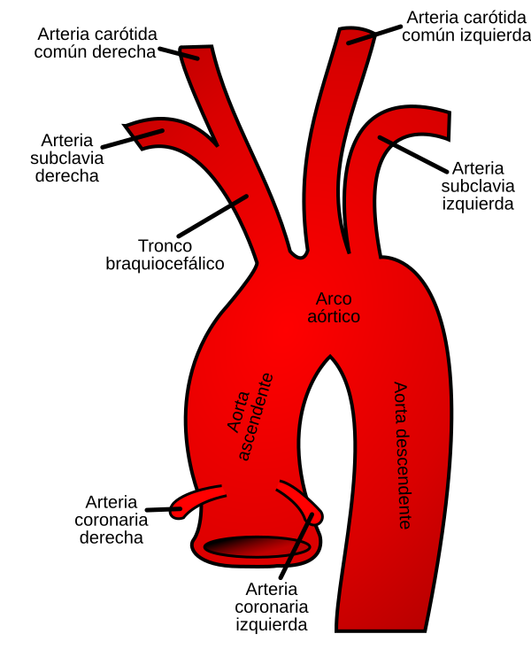
- Tronco braquiocefálico arterial
{kind=link}
Sistema Arterial del MMSS
- Arteria Axilar
- Arteria Humeral
- Arteria Cubital
- Arteria Radial
Referencia visualImagen 02
{kind=link}
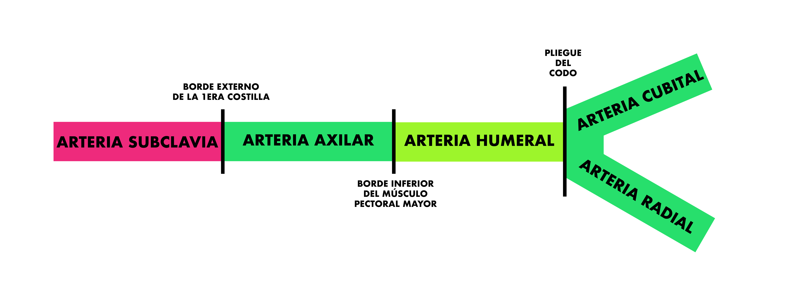
Arteria Subclavia
Nace directamente del cayado aórtico.
- Arteria vertebral: Primera rama; se dirige a los forámenes de las apófisis transversas cervicales para irrigar el encéfalo
- Arteria mamaria interna (torácica interna): Dirigida en sentido caudal/inferior.
- Tronco tirocervical (o tirobicervicoescapular)
- Arteria tiroidea inferior: Irriga el polo inferior de la glándula tiroides.
- Arteria cervical ascendente: Corre junto al nervio frénico e irriga los músculos escalenos y el angular de la escápula
- Arteria cervical transversa: Perfora el músculo trapecio
- Arteria supraescapular: Forma parte de la red arterial periescapular.
- Arteria escapular posterior.
Arteria Axilar
Nace del borde externo de la primera costilla y termina a nivel del borde inferior del músculo pectoral mayor. Va a ser contenido de la fosa axilar (Región Topográfica). Se relaciona con los músculos del hombro y va a formar el paquete VAN Axilar = Vena Axilar (1 sola) + Nervio Circunflejo (Axilar).
Ramas Colaterales de la A. Axilar
- A. Torácica Superior
Se dirige hacia anterior, atraviesa la fascia clavipectoral y se distribuye en la región mamaria e intercostal.
- A. Mamaria Externa. (Torácica Lateral)
Desciende hacia inferior, interno y anterior por delante del M. Serrato Mayor.
- A. Acromiotorácica.
Hacia anterior para perforar la fascia clavipectoral y se divide en una rama pectoral que va a irrigar M. Pectorales y región mamaria y otra acromial se va a encargar de irrigar la región del hombro.
- A. Subescapular - Escapular Inf.
Se dirige hacia inferointerno y se divide en la arteria toracodorsal y la arteria circunfleja de la escápula (atraviesa el Triángulo Homotricipital).
Imagen
Referencia visualImagen 03
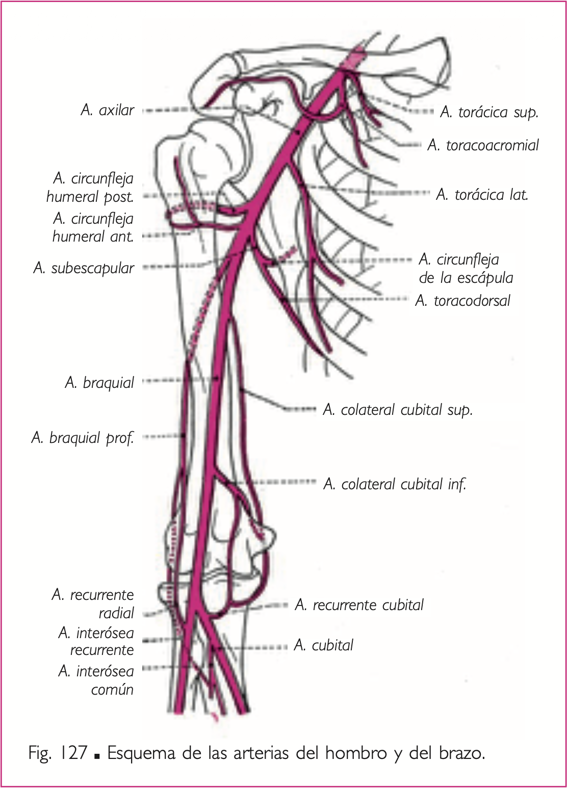
Referencia visualImagen 04
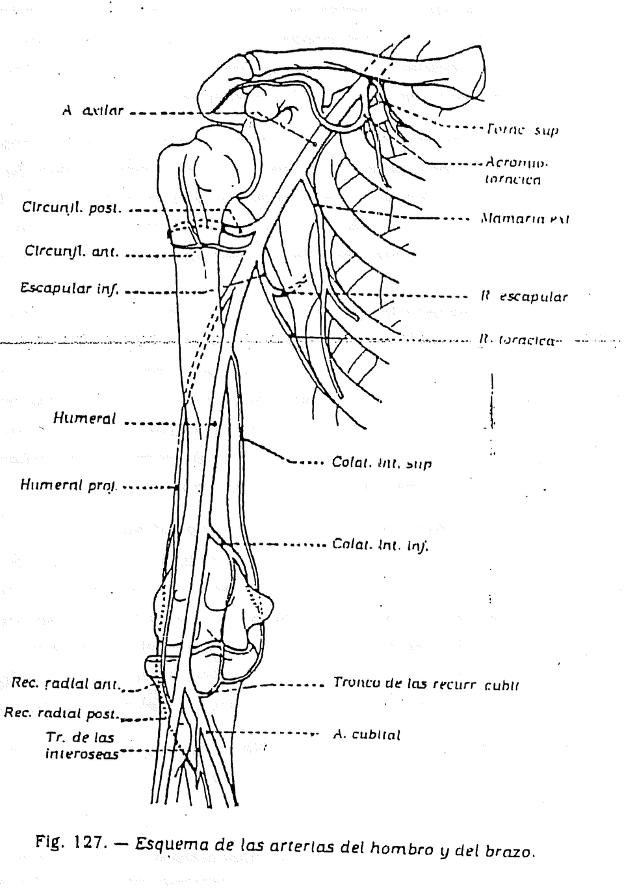
{kind=link}
{kind=link}
Arterias Circunflejas
La A. Circunfleja Posterior se dirige hacia posteroexterno y va a atravesar el Cuadrilátero de Velpeau, rodea el cuello quirúrgico y en la cara externa del húmero. Se anastomosa con la A. Circunfleja Anterior. Mientras que la A. Circunfleja Anterior rodea la cara anterior del cuello quirúrgico del Húmero.
Imagen
Referencia visualImagen 05
{kind=link}
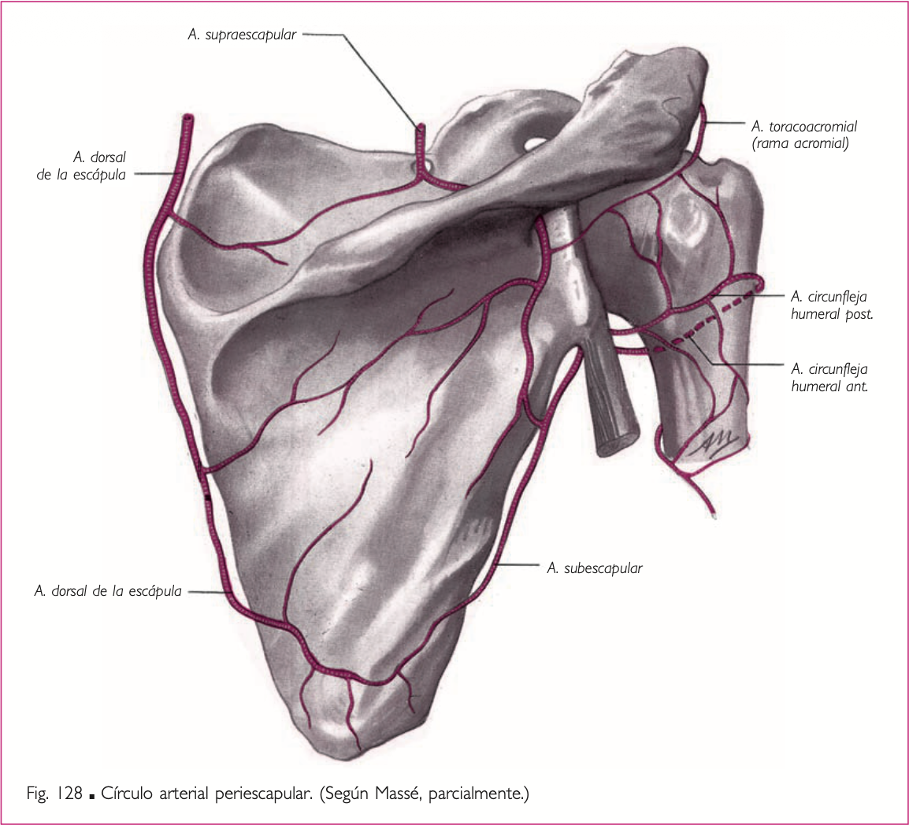
Referencia visualImagen 06
{kind=link}
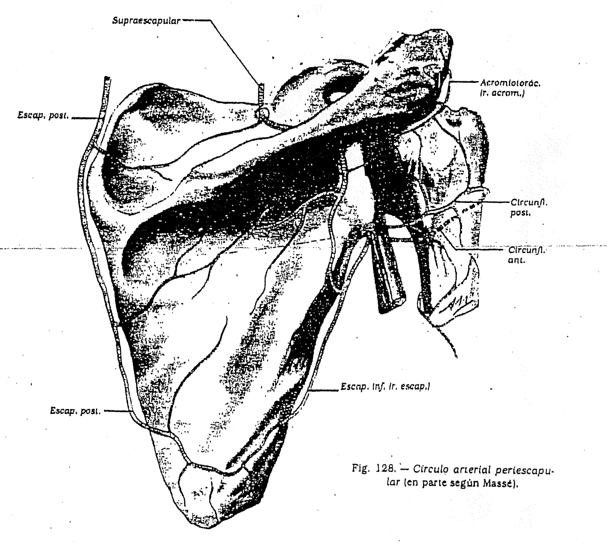
Arteria Humeral - Braquial
Está situada en la región anterior del brazo y del codo. Se extiende desde el borde inferior del músculo pectoral mayor recorre la cara anterointerna del brazo hasta la cara anterior de la fosa del codo.
Se va a estar relacionando con el nervio mediano y las venas humerales (2) formando el PVN Braquial, se relaciona con el nervio cubital y cutáneo interno. Además se relaciona con los Músculos del Grupo Anterior del Brazo. Forma parte del Canal Bicipital Interno.
Ramas Colaterales de la A. Humeral
- Arteria Nutricia
- Se introduce en el agujero nutricio del húmero
- Ramos musculares a los músculos biceps braquial, braquial anterior coracobracoquial, deltoides y al vasto interno del triceps braquial.
- Arteria Humeral Profunda
- Se dirige hacia inferior y posteroexterno, atraviesa el triángulo de Avelino Gutierrez junto con el Nervio Radial y se introduce en el canal de torsión, a nivel del borde anteroexterno del húmero (epicóndilo) se divide en arteria colateral radial anterior o radial simplemente y posterior/media con respecto al epicóndilo.
- Colateral Radial Anterior
- Colateral Radial Posterior
- Se dirige hacia inferior y posteroexterno, atraviesa el triángulo de Avelino Gutierrez junto con el Nervio Radial y se introduce en el canal de torsión, a nivel del borde anteroexterno del húmero (epicóndilo) se divide en arteria colateral radial anterior o radial simplemente y posterior/media con respecto al epicóndilo.
- Arteria Colateral Cubital Superior
- Se dirige hacia inferior y posterior del húmero, pasando por el canal epitrocleoolecraneano
- Arteria Colateral Cubital Inferior
- Se dirige hacia inferior y anterior del húmero, pasando por el canal bicipital interno. Se divide en una rama anterior y posterior encima de la epitroclea.
- Anterior
- Posterior
Imagen
Referencia visualImagen 07
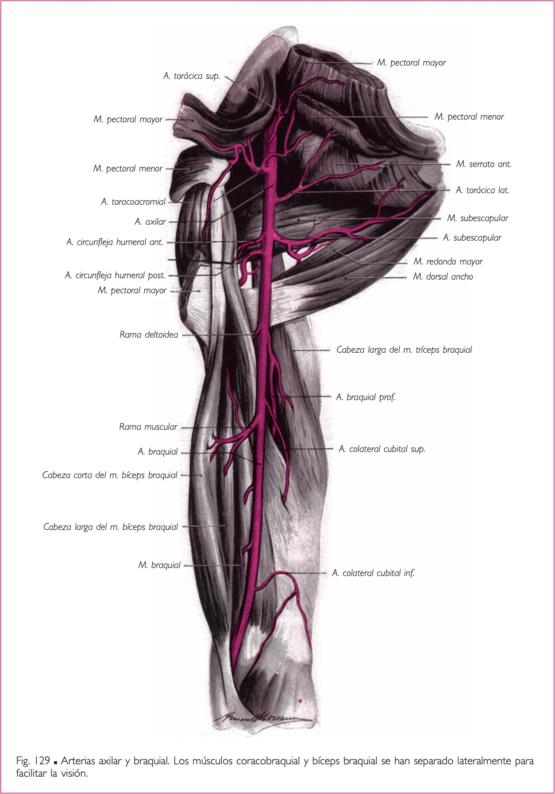
Referencia visualImagen 08
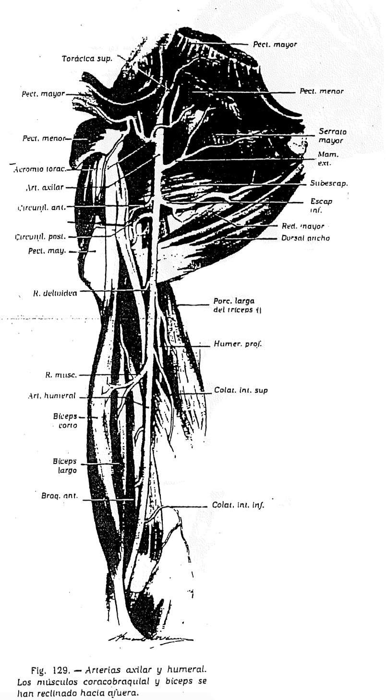
- Se dirige hacia inferior y anterior del húmero, pasando por el canal bicipital interno. Se divide en una rama anterior y posterior encima de la epitroclea.
{kind=link}
{kind=link}
Ramas Terminales
Arteria Radial
Es la rama externa que nace de la bifurcación de la arteria humeral. Se extiende sobre la cara anteroexterna del antebrazo y la cara dorsal del carpo, desde la fosa del codo hasta el dorso de la mano (al nivel de la muñeca se dirige hacia posterior). Se anastomosa con la Arteria Cubitopalmar y forma el Arco Palmar Profundo. Se relaciona con los músculos del grupo anterior del antebrazo, donde se encuentra a nivel de la muñeca en el canal del pulso. En el carpo se observa en la tabaquera anatómica
Ramas Colaterales de la Arteria Radial
- A. Recurrente Radial Anterior.
- Pasa por el canal bicipital externo y forma parte de la red periarticular del codo.
- A. Transversa del Carpo
- Nace a la altura del músculo pronador cuadrado. Se anastomosa con su homóloga.
- A. Radiopalmar
- Se anastomosa con la A. Cubital y forman el arco palmar superficial.
- A. Principal del Pulgar
- Desciende sobre la cara dorsal del 1º metacarpiano y de la falange proximal del 1º dedo
- A. Dorsal del Carpo
- Se dirige transversalmente en sentido interno y se anastomosa con su homóloga (proveniente de la arteria cubital) formando la red dorsal del carpo
- A. del Primer Espacio Interóseo
- Atraviesa el 1° músculo interóseo dorsal
Imagen
Referencia visualImagen 09
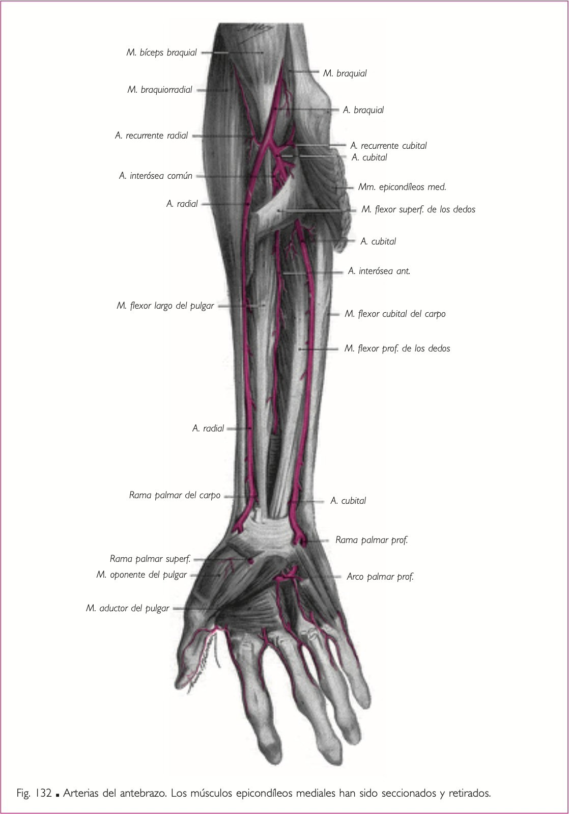
Referencia visualImagen 10
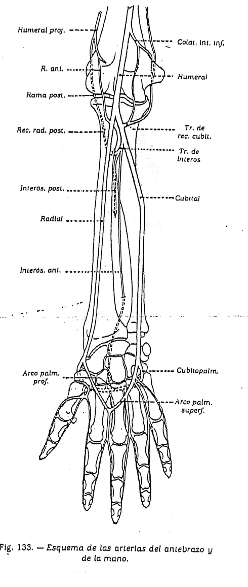
{kind=link}
{kind=link}
Arteria Cubital
Es la rama interna de la bifurcación de la arteria humeral. Situada en la parte anterointerna del antebrazo y se extiende desde la fosa del codo hasta la palma de la mano. Se relaciona con los músculos del grupo anterior del antebrazo, nervio mediano, hueso pisiforme y el nervio cubital con quien pasa por el canal de Guyon en la muñeca.
Ramas Colaterales de la Arteria Cubital
- Tronco de las Interóseas
- Da origen a:
- A. Interósea Anterior atraviesa a la Membrana Interósea
- A. Interósea Posterior: Da la arteria recurrente radial posterior
- Da origen a:
- Tronco de las Recurrentes
- Da origen a:
- A. Recurrente Cubital Anterior
- Forma parte de la red periarticular del codo y pasa por el canal bicipital interno.
- A. Recurrente Cubital Posterior
- Pasa por el canal epitrocleo olecraneano. Forma parte de la red periarticular del codo
- A. Recurrente Cubital Anterior
- Da origen a:
- A. Cubito Palmar: (Rama Palmar Profunda)
- Se anastomosa con la A. Radial y forman el arco palmar profundo.
- A. Transversa del Carpo
- Nace a la altura del músculo pronador cuadrado.
- A. Dorsal del Carpo
- Se dirige transversalmente en sentido interno y forma, la red dorsal del carpo
Imagen
Referencia visualImagen 11
{kind=link}
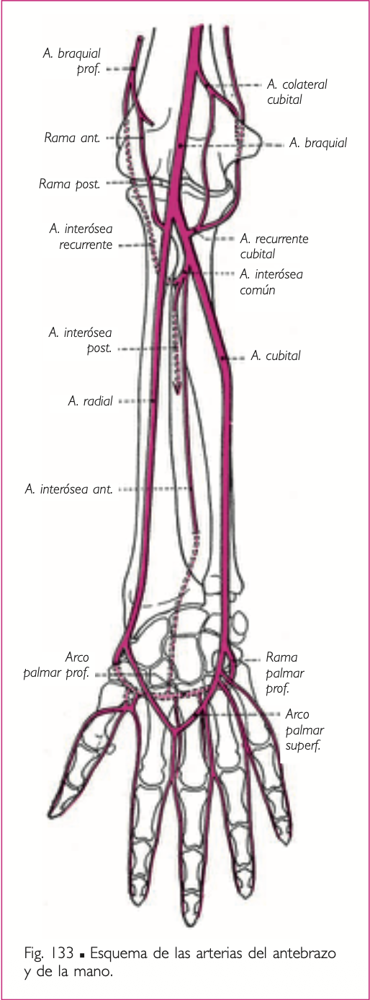
Red Periarticular del Codo
Resulta que la articulación del codo está rodeada de una densa red arterial que se da por la anastomosis de las arterias colaterales de la arteria humeral, radial y cubital:
- Arteria colateral radial anterior (humeral profunda) + A. recurrente radial anterior.
- Arteria colateral radial posterior (humeral profunda) + A. recurrente radial posterior (también se llama A. Interósea Recurrente) (rama del tronco de las interóseas).
- Arteria colateral cubital posterior + A. recurrente cubital posterior
- Arteria colateral cubital anterior + A. recurrente cubital anterior
Imagen
Referencia visualImagen 13
{kind=link}
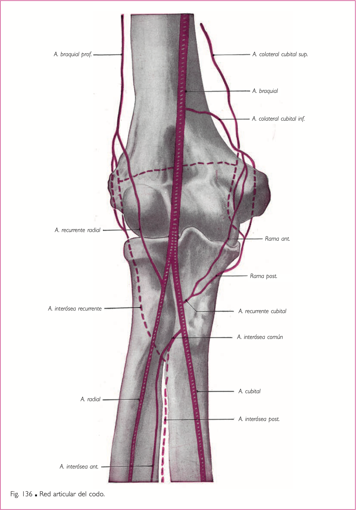
Arcos Arteriales de la Mano
- Arco Palmar Superficial
Está formado por la anastomosis de la arteria cubital con la arteria radio palmar (o palmar superficial).
- Arco Palmar Profundo
Está formado por la anastomosis de la arteria cubito palmar (o palmar profunda) con la arteria radial.
- Arco Dorsal de la Mano
Está formado por la anastomosis de ambas arterias dorsales del carpo.
Imagen
Referencia visualImagen 14
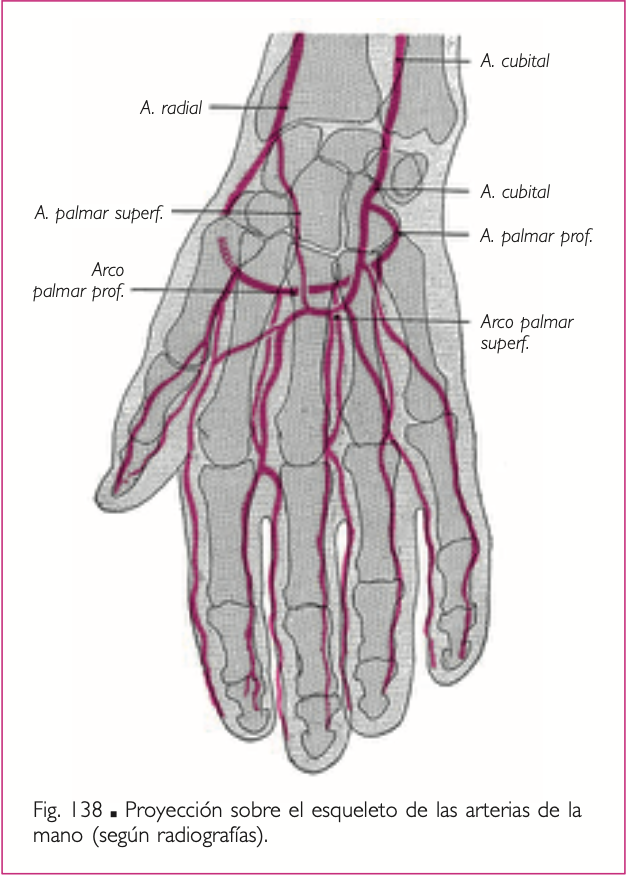
{kind=link}
El Cubito Flota y la Radio se hunde
Imagen
Referencia visualImagen 15
{kind=link}
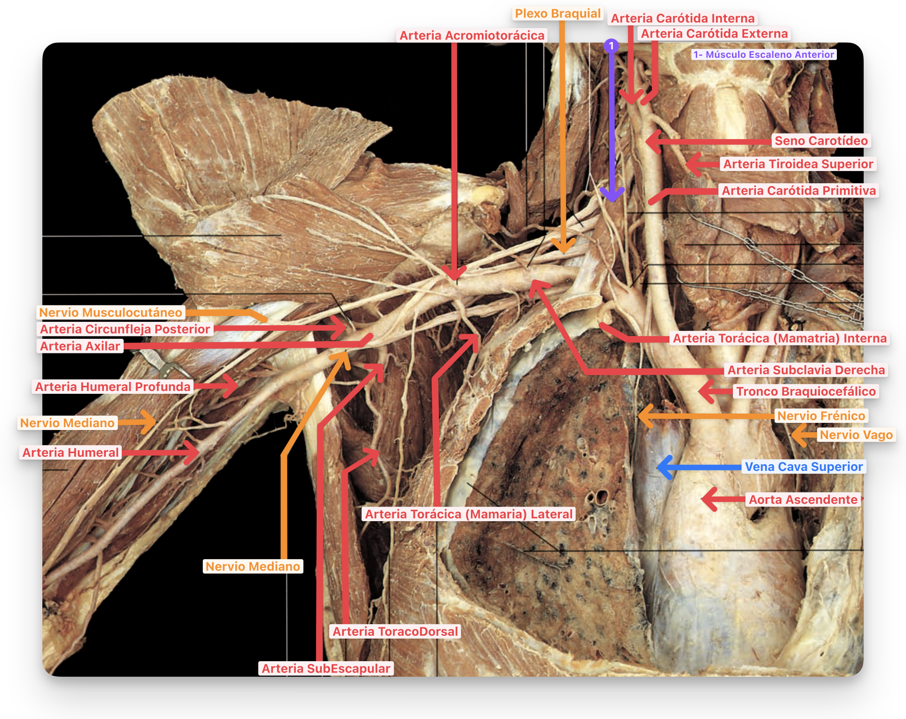
Referencia visualImagen 16
{kind=link}
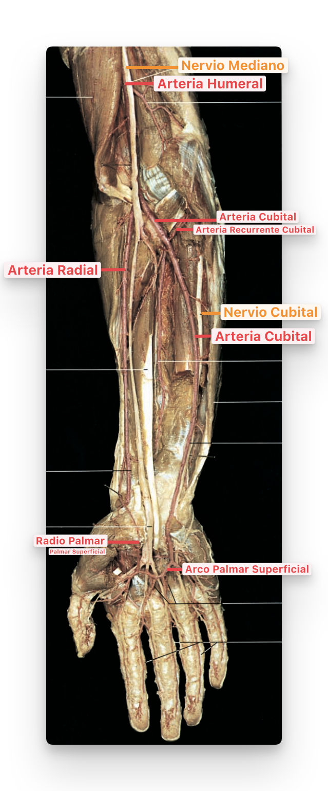
Sistema Venoso del Miembro Superior
Sistema Profundo
Venas homónimas que acompañan a las arterias. Dos por cada arteria salvo en la axilar que solo es una.
Sistema Superficial
En la mano tenemos una Red Venosa Palmar que se vuelca en Venas Dorsales que termina en las venas metacarpianas, estas Venas Dorsales y las Venas Metacarpianas forman el arco venoso dorsal.
Este arco dorsal emite dos venas, una para unirse con:
- La Vena Salvatela del Meníque hacia interno para dar origen a la Vena Cubital Superficial (Basílica).
- La Vena Cefálica del Pulgar hacia externo para originar la Vena Radial Superficial (Cefálica).
La unión de la Cefálica del Pulgar con el Arco Venoso Dorsal va a dar origen a la Vena Radial Superficial que se va a hacer inmediantemente anterior. La unión de la Vena Salvatela del Meñique con el Arco Venoso Dorsal va a dar origen a la Vena Cubital Superficial
Imagen
Referencia visualImagen 17
{kind=link}
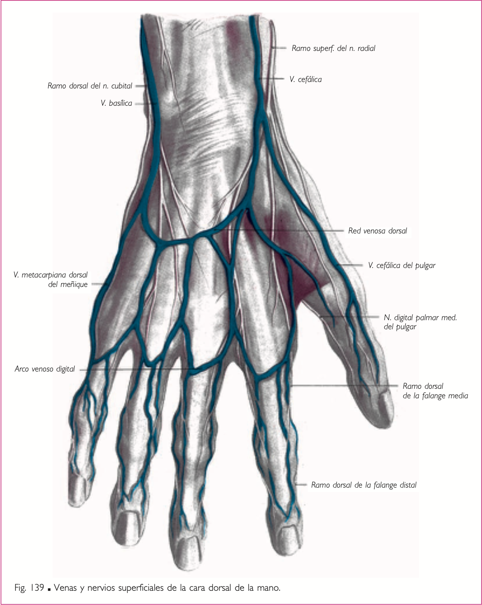
Referencia visualImagen 18
{kind=link}
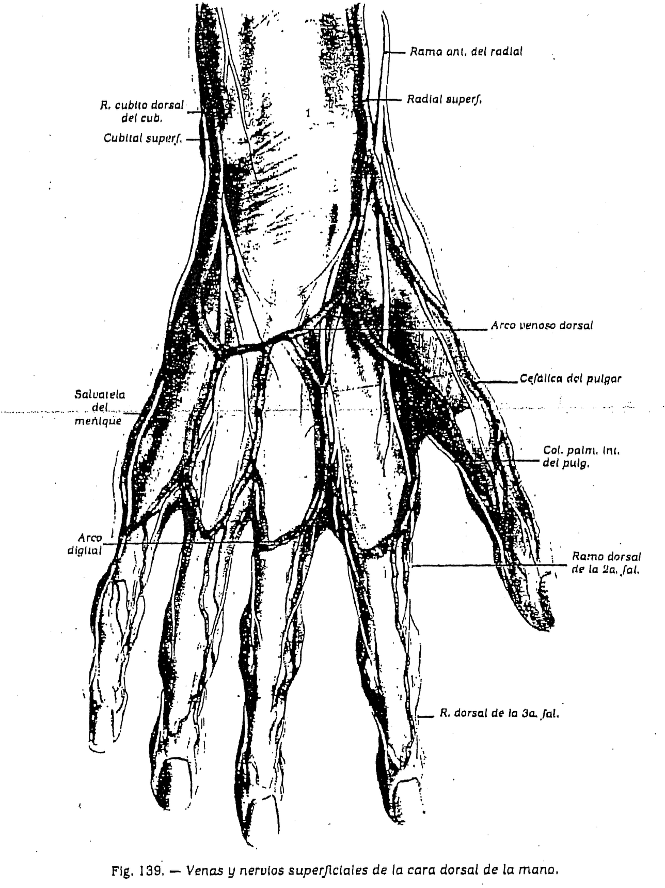
Por la cara posterior del antebrazo se encuentra la Vena Radial Accesoria (mediana del antebrazo).
La vena radial superficial a nivel del codo se divide en:
- La Vena Mediana Basílica (interna) que se une a la vena cubital superficial (o cefálica) para dar origen a la Vena Basílica
- La Vena Mediana Cefálica (externa) que se une a la vena radial accesoria (o cefálica) y origina la Vena Cefálica
Preparado
Referencia visualImagen 19
{kind=link}
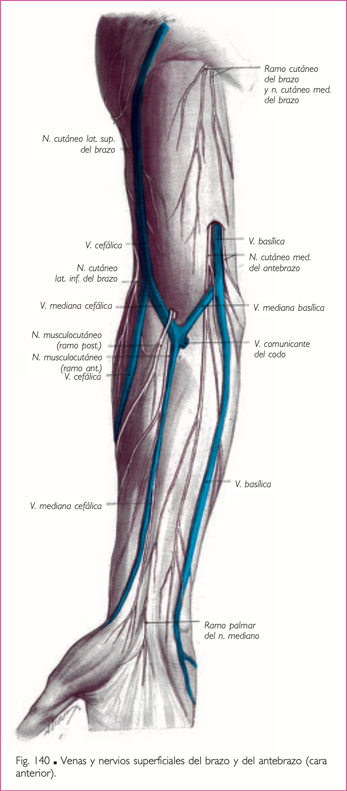
Referencia visualImagen 20
{kind=link}
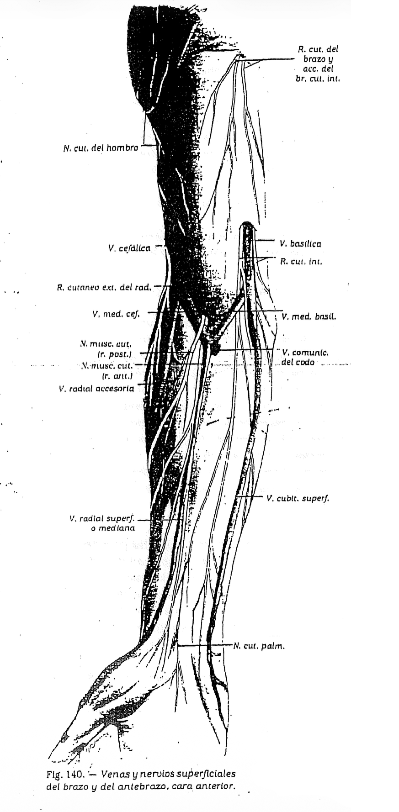
Sistema Linfático
Ganglio Superficiales
- Los ganglios supraepitrocleares: reciben los troncos de la mitad interna de la mano.
- Los ganglios deltopectorales: reciben vasos superficiales, satélites de la vena cefálica
Drenan en los ganglios axilares.
Ganglios Axilares
- Grupo braquial: recibe los linfáticos superficiales y drenan en los intermedios y los infraclaviculares.
- Grupo infraescapular: recibe la piel de la mitad inferior de la nuca, de la parte superior del dorso y de la cara posterior del hombro. Drena en los intermedios
- Grupo mamario externo: recibe la región anterolateral del torax y de la porción supraumbilical del abdomen, la mitad externa de la glándula mamaria y la pleura parietal.
- Grupo intermedio: reúne los anteriores y drenan en los inflaclaviculares
- Grupo infraclavicular: recoge la linfa de los deltopectorales y de los intermedios, para drenar en el tronco subclavio.
El Sistema Linfático tiene dos grandes Colectores de Linfa:
- Conducto Torácico: Recoge linfa de la región Infradiafragmática del Hemitorax Izquierdo, del MMSS Izq y la mitad Izq de cabeza y cuello.
- Gran Vena Linfática: Recoge la linfa del Hemitorax Derecho, MMSS Derecho, y la mitad derecha de cabeza y cuello
Drenan en el Tronco Braquiocefálico Izquierdo y Derecho respectivamente
Referencia visualImagen 21
{kind=link}
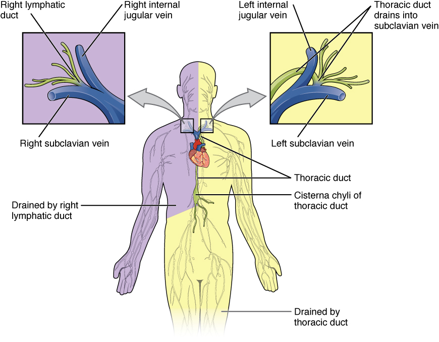